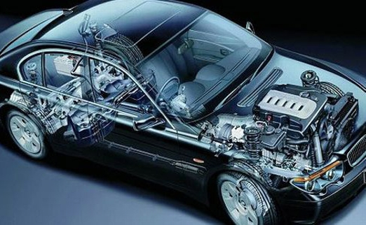

ЗАЧЕМ ДЕЛАТЬ ТЕХНИЧЕСКОЕ ОБСЛУЖИВАНИЕ АВТО?
Зачем делать техническое обслуживание автомобиля
Автомобилистов сегодня в стране миллионы. Однако не все владельцы собственного автотранспорта понимают, зачем делать техническое обслуживание авто. Результатом пренебрежения этой операцией часто бывают аварии, травмы и даже гибель водителя и пассажиров.
Своевременное ТО – это залог исправной работы машины
Техническое обслуживание отличает от ремонта профилактический характер мероприятия. Чтобы понять, зачем делать техническое обслуживание авто, нужно понимать, что любая машина является сложным механизмом, который в процесс эксплуатации постепенно изнашивается. Вибрация, взаимное трение деталей, колебания температуры, влажность воздуха действуют на машину разрушающим образом. Даже если вождение осуществляется бережно и по хорошему покрытию. Отдельные узлы и агрегаты способны незаметно выходить из строя.
При проведении ТО подобные дефекты устанавливаются и устраняются, предотвращая возникновение опасных инцидентов на дороге. Ликвидация поломок также оптимизирует работу узлов машины, снижая эксплуатационные затраты и расходы на ремонт, при этом время «жизни» авто увеличивается.
Ежедневное обслуживание водитель или владелец автомашины может выполнять собственными силами. Все остальные разновидности техобслуживания рациональнее проводить на станции автосервиса, имеющей соответствующую техническую базу. Желательно, чтобы выбранная СТО специализировалось именно на вашей модели автомобиля.
Можно надеяться, что после прочтения этого текста каждый сделал выводы, зачем делать техническое обслуживание авто, насколько важно его своевременное проведение и какая от него польза. Прежде всего, его проводят для установления исправности машины и безопасности для водителя и его пассажиров. Немаловажным моментом выступает и экономия на эксплуатационных расходах – оплате топлива и ремонта.
ПЕРИОДИЧНОСТЬ ЗАМЕНЫ РАСХОДНЫХ МАТЕРИАЛОВ
Когда стоит менять расходники? Этот вопрос часто возникает у автолюбителей. Периодичность замены расходных материалов, таких как: масло ДВС, масло автоматической и механической коробки передач (АКПП, МКПП), антифриз, фильтра, элементы подвески и тормозной системы у каждого производителя своя. Кроме того, для каждой конкретной модели рекомендуется свой интервал обслуживания.
Точную информацию можно узнать на официальном сервисе, тематических форумах, инструкциях по эксплуатации, а так же на данном сайте у продавца-консультанта. Далее приводятся усредненные значения о периодичности замены расходников:
Масло двигателя внутреннего сгорания (ДВС)
Атмосферный двигатель - 10 000 - 15 000 км, турбированный двигатель 7 000 - 10 000 км
Фильтр масляный, воздушный, салонный, топливный
Вместе с заменой масла ДВС (т.е. 7 000 - 15 000 км)
Свечи зажигания
Каждые 10 000-30 000 км, иридиевые - до 100 000 км
Масло механической коробки передач (МКП)
Каждые 60 000-80 000 км
Масло автоматической коробки передач (АКПП), вариатора, DSG
До 30 000 км
Антифриз (охлаждающая жидкость)
До 150 000 км или 3 года
Тормозная жидкость
До 2 лет, вне зависимости от пробега